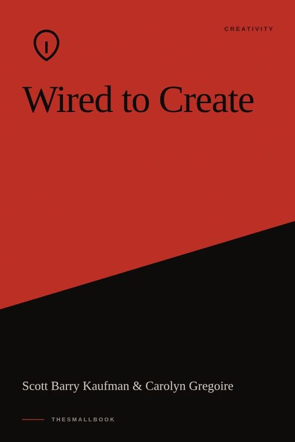

Why Did Syd Barrett Fail?
The Creative Genius Who Burned Out Before His Band Made History
📜 What Happened
Syd Barrett was the original creative engine of Pink Floyd - the songwriter, the voice, the wild imagination that gave the band its name and its first hits. He wrote 'See Emily Play' and the psychedelic masterpiece 'Piper at the Gates of Dawn' before turning 21. Then the intensity that powered his creativity turned inward: heavy LSD use, erratic behaviour, on-stage meltdowns where he played one chord for an hour or stood frozen. The band - his friends - had to choose between the genius and the machine; they chose the machine, and Barrett drifted into obscurity, living out his decades in his mother's house in Cambridge, painting and playing alone. Pink Floyd went on to sell 250 million records without him. The man who invented the band's sound died in 2006, remembered as much for the burn as for the brilliance.
☠️ The Fatal Mistake
Confusing intensity with sustainability - the same fire that made him a genius was never given an off-switch.
🧠 The Lesson (Free for You)
Creative intensity is a fuel, and fuels run out. Barrett's tragedy is the extreme version of a pattern every creative professional knows: the all-night sessions, the refusal to rest, the identity fused to the work. The culture that worships the tortured artist forgets that the torture usually wins. The sustainable creative is boring in everything except the work - and that boringness is what lets the work continue for decades instead of burning in three years.
The Antidote Book

Drawing on 100+ studies of creators and interviews with icons from Maya Angelou to David Lynch, psychologists Kaufman and Gregoire reveal the creative mind's ten defining habits: imaginative play, passion, daydreaming,…
📖 OPEN THE FULL INTERACTIVE BREAKDOWN →Questions people ask about Syd Barrett
Why did Syd Barrett fail? Confusing intensity with sustainability - the same fire that made him a genius was never given an off-switch.
How much was lost? His mind, his career, and his place in the band he founded
What is the lesson? Creative intensity is a fuel, and fuels run out. Barrett's tragedy is the extreme version of a pattern every creative professional knows: the all-night sessions, the refusal to rest, the identity fused to the work. The culture that worships the tortured artist forgets that the torture usually wins. The sustainable creative is boring in everything except the work - and that boringness is what lets the work continue for decades instead of burning in three years.
Syd Barrett kyun fail hua? In simple English: Confusing intensity with sustainability - the same fire that made him a genius was never given an off-switch. The cost was His mind, his career, and his place in the band he founded.
Keep digging
More fame and fortune failures · Open the full Graveyard
Read the antidote book summary: Wired to Create
Related failures
- Why did Yeezy fail? 2022 · One Month of Statements Turned a $1.5 Billion Partnership Into a Write-Off
- Why did Rana Kapoor fail? 2020 · 'Diamonds Are Forever' - Loans Weren't
- Why did Q Magazine fail? 2020 · The music monthly closes
- Why did V.G. Siddhartha fail? 2019 · The Coffee King Who Carried It Alone
- Why did Johnny Depp fail? 2017 · $30,000 a Month on Wine
- Why did Maria Sharapova fail? 2016 · A Diabetes Drug, a Missed Email, and $200 Million of Endorsements
Searchable, filterable, simple to read - they paid billions; you get the lesson.